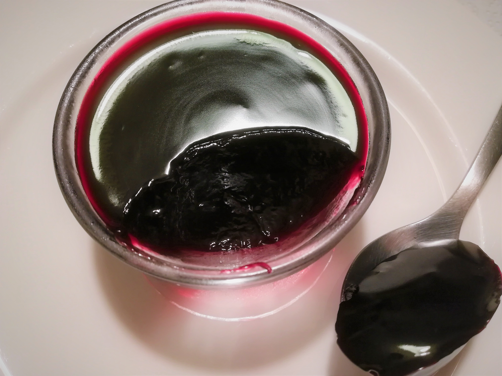

SUGO D'UVA
DOLCI

- Descrizione
- Questo sugo, dall'aspetto di una marmellata densa, ha origine nella cucina contadina - nel periodo della vendemmia - ed è oggi consumato come un dessert.
- Ingredienti
1 l di mosto d'uva dolce
100 g di farina 00
2 cucchiai di zucchero
- Preparazione
- Mettete il mosto in pentola e mescolate con una frusta e con l'aiuto di un colino incorporate la farina per non fare i grumi. Addensate e continuate per 5 minuti mescolando sempre. Distribuite in coppette e lasciate raffreddare. Conservate in frigorifero.
Torna alla pagina iniziale
by Bartoli Matteo